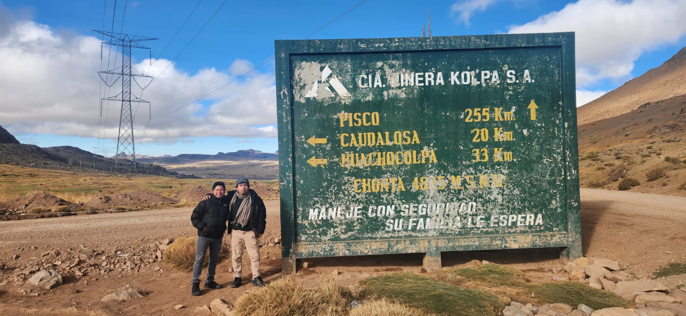

Jean C Ordoñez
About Me
My name is Jean C Ordoñez. I enjoy technology and web development. I am taking WDD 131 to improve my skills in HTML, CSS, and JavaScript so I can create dynamic and professional websites.
Projects
I enjoy working on personal projects such as websites, apps, and digital tools. Throughout this course, I will build new projects and apply what I learn each week.